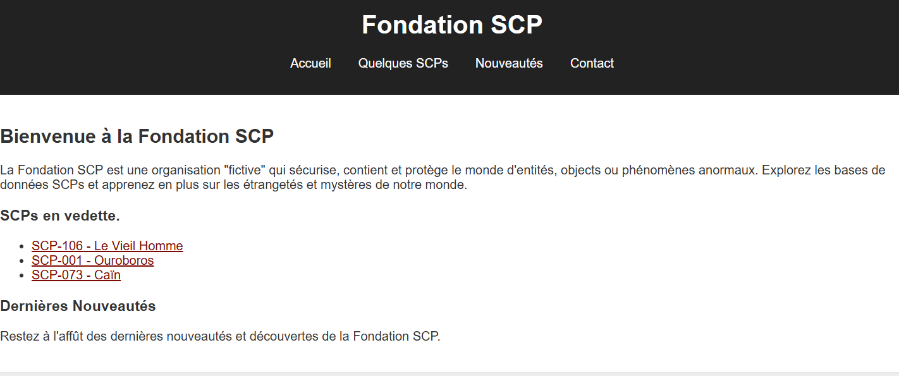
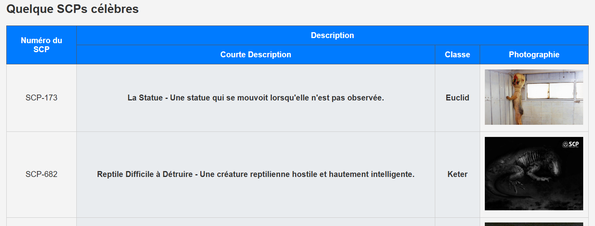
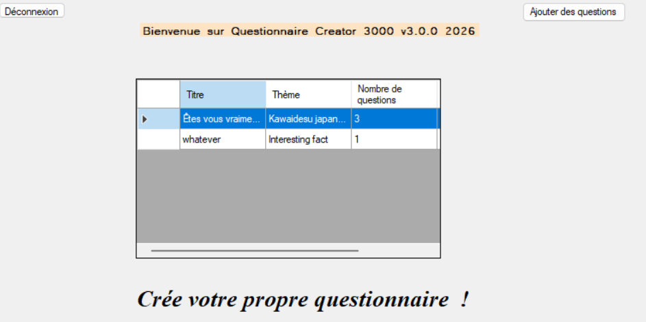
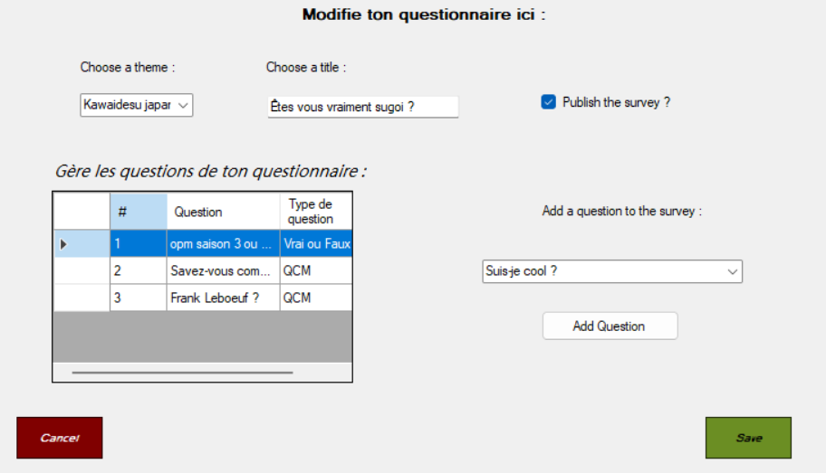
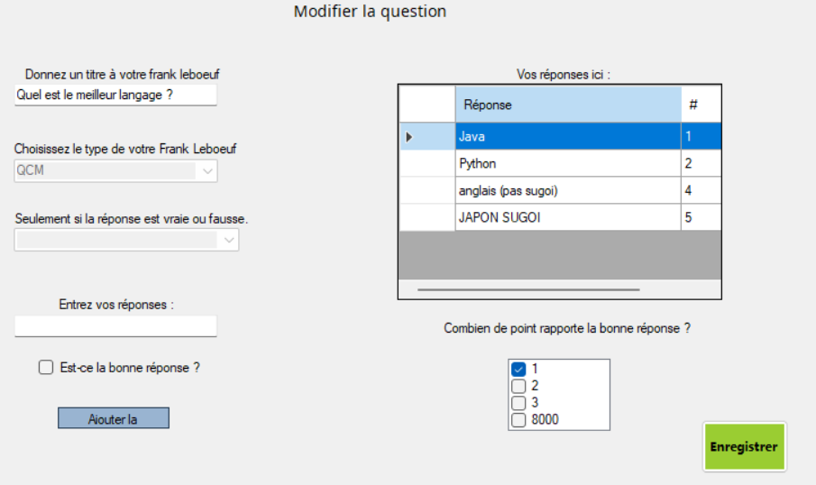
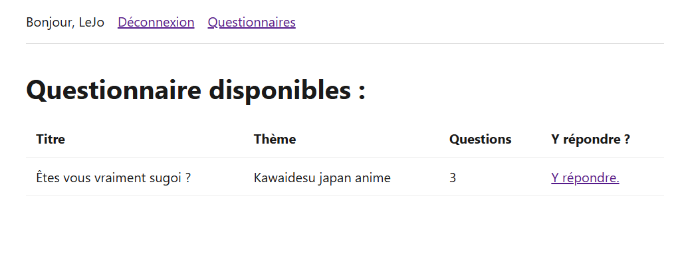
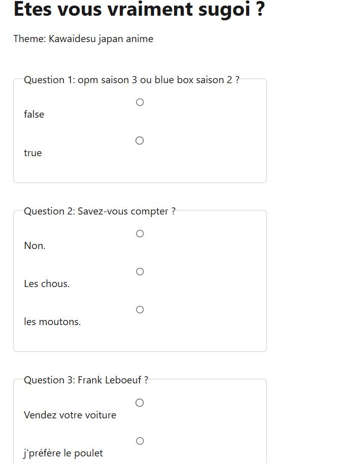

Projets Scolaires
Voici les projets que j'ai réalisés dans le cadre de ma formation. Cliquez sur un projet pour voir les détails.
Projet 1 : Site Web
▼Description du projet
Ce site web simple comporte différentes commandes HTML classiques tel qu'un tableau, un formulaire (inutilisable malheureusement) ou encore des liens et des images cliquables. Ce site comporte différente classe CSS ainsi qu'un peu de JavaScript afin de changer le thème du site (passant du noir au blanc et inversement). Ce site est basé sur la Fondation SCP.
Technologies utilisées
- HTML, CSS, JavaScript
Liens
Captures d'écran


Projet 2 : SQuiz-E (Desktop)
▼Description du projet
Ce projet est une application desktop développée sur Visual Studio Community 2022 en C# et utilisant l'interface graphique WinForm. Cette application permet de créer des questionnaires. L'utilisateur peut en créer de A à Z, du titre aux réponses d'une question en particulier.
Contexte
Dans le cadre d'une politique de qualité, StadiumCompany souhaite ce doté d'un outil permettant la création de questionnaire qui pourront être ensuite donnés à ses salariés et à ses collaborateurs.
Technologies utilisées
- Visual Studio Community 2022
- C#
- Bibliothèque MySQL C#
- Bibliothèque BDCrypt C#
- WinForm
- Base de données faite sur MariaDB
Liens
Documents à télécharger
Captures d'écran



Projet 3 : SQuiz-E_Web
▼Description du projet
Ce projet est un site web developpé en PHP et utilisant l'architecture MVC. Ce site Permet aux utilisateurs de répondre à des questionnaires. Plus précisement aux questionnaires crées sur l'application desktop (SQuiz-E_Desktop).
Contexte
Dans le cadre d'un politique de qualité, StadiumCompany souhaite ce doté d'un outil Permettant à ses salariés et collaborateurs de répondres à des questionnaires.
Technologies utilisees
- PHP
- Architecture MVC
- HTML
- CSS
- Base de données faite sur MariaDB
Liens
Documents à télécharger
Captures d'écran

